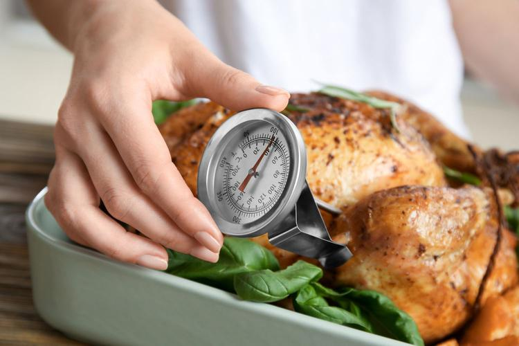

When I first started scaling recipes, I thought I just needed a calculator and a dream. That worked for a while. Then I tried to scale a wedding cake for 200 people and realized that a calculator is not enough. You need the right tools. Not fancy tools, necessarily. Just tools that make the math easier, the measuring more accurate, and the process less stressful.
After a decade of scaling, I've narrowed down my toolkit to fifteen essentials. Some of them are obvious. Some of them you might not expect. But I use every single one of them on a regular basis.
The first tool, and the most important, is a digital kitchen scale. I cannot say this enough. If you only buy one thing from this list, buy a scale. You need 0.1 gram precision. You need a capacity of at least 2,000 grams. You need a tare function. You need it to switch between grams and ounces. I use my scale every single day. It lives on my counter next to the coffee maker. Mine cost $22 and has lasted for years. Don't buy a mechanical scale. Don't buy one that only measures whole grams. Don't buy one that's too small to hold a mixing bowl. Get a good digital scale and leave it out where you can see it.
The second tool is a set of small glass bowls for mise en place. I have 24 of them. They cost about $1.50 each at a restaurant supply store. When I scale a recipe, I measure every ingredient into its own bowl before I start mixing. This prevents me from forgetting things or doubling things by accident. It also helps me catch mistakes because I can look at all the bowls and see if anything looks wrong. You don't need 24 bowls. Start with 8 or 10. You'll buy more as you need them.
The third tool is a notebook. Not your phone. Not an app. A physical notebook with a pen. I have three of them now, filled with scaling notes. Every time I scale a recipe, I write down the original recipe, the scaling factor, the actual amounts I used, the pan size, the oven temperature, the baking time, and notes about how it turned out. "Too salty, reduce by 10% next time." "Good crumb but slightly dry, add 2 tablespoons milk." That notebook is worth more than any cookbook.
The fourth tool is a calculator. Your phone has one, but I prefer a dedicated calculator for the kitchen. It's faster. It doesn't have notifications. It doesn't turn off after thirty seconds. I have a cheap solar-powered calculator that lives next to my scale. When I'm scaling a recipe, I use the calculator to multiply every ingredient by the scaling factor, then apply the exponents for leavening and salt. It takes maybe five minutes. That's five minutes well spent.
The fifth tool is a set of measuring spoons that you trust. Not the flimsy ones that bend. Get stainless steel spoons with clearly marked sizes. I have two sets, one for dry and one for wet. The dry set stays in my flour bin. The wet set hangs on a hook. This might seem excessive, but when you're scaling a recipe by 6x and you need to measure 1.8 teaspoons of baking soda, you don't want to be searching for a clean spoon.
The sixth tool is a set of liquid measuring cups. You need a 1-cup, a 2-cup, and a 4-cup at minimum. Glass is better than plastic because it doesn't stain and you can see the measurements clearly. I use my liquid measuring cups for milk, water, oil, honey, and maple syrup. For thick liquids like honey, I spray the cup with nonstick spray first so the honey slides out easily.
The seventh tool is a bench scraper. This is for bread and pastry, but it's also useful for scaling because it helps you divide dough evenly. When you make a large batch of cookies, you can use a bench scraper to cut the dough into equal portions. When you make bread, you can use it to divide a large mass of dough into smaller loaves. It's a $5 tool that saves a lot of headache.
The eighth tool is an oven thermometer. Most ovens are wrong. Mine is off by 25 degrees. That doesn't matter much for a small batch, but when you're baking a large batch, the temperature error is magnified. A 25-degree error might burn the edges of your 9x13 pan while the center is still raw. I have an oven thermometer hanging from the middle rack. I check it every time I bake. If the oven is too hot, I adjust the dial. This is not optional for serious scaling.
The ninth tool is a probe thermometer. This is for bread and large roasts. A toothpick can tell you if a cake is done, but a probe thermometer tells you exactly. For bread, you want an internal temperature of about 200 degrees Fahrenheit. For a large batch of meatloaf, you want 160. For a casserole, you want 165. Guessing is not good enough when you're feeding 50 people.
The tenth tool is a timer that you can set and walk away from. Your phone has a timer, but I prefer a dedicated kitchen timer with big buttons and a loud alarm. When I have three batches going at once, I need to know when each one comes out. I use different colored timers for different tasks. Red for the cake, blue for the cookies, green for the bread. This keeps me from pulling the wrong thing out of the oven.
The eleventh tool is a set of large mixing bowls. You need at least two big bowls when you're scaling. One for the dry ingredients and one for the wet. I have a set of stainless steel bowls that nest inside each other. The biggest one holds about 8 quarts. That's enough for a 4x bread recipe. For larger batches, I use a plastic tub from a restaurant supply store. Those tubs are cheap, durable, and stackable.
The twelfth tool is a sturdy spatula. Not the flimsy silicone ones that bend. I use a heavy-duty rubber spatula with a metal core. When you're mixing a 5x batch of brownie batter, a flimsy spatula will fold in half. You need something that can handle the resistance. I have three spatulas in different sizes. The big one is for mixing. The medium one is for scraping bowls. The small one is for getting into corners.
The thirteenth tool is a set of sheet pans and cooling racks. You need enough sheet pans for your largest scaled batch. If you're making 100 cookies, you might need 6 or 8 sheet pans. You also need cooling racks that fit inside those sheet pans. Don't skimp here. Cheap sheet pans warp in the oven. Spend a little more for heavy-duty aluminum. They'll last forever.
The fourteenth tool is a pan size chart. You can buy one or make your own. I made mine on a piece of cardstock and laminated it. It has the volumes of common pan sizes, the areas of common pan sizes, and the substitution ratios. When I need to know if a 9-inch round pan can substitute for an 8-inch square pan, I look at the chart. The answer is yes, they have almost the same area. But a 9x13 pan is not a substitute for a 9-inch round unless you adjust the recipe. The chart makes that obvious.
The fifteenth tool is a phone or tablet with my calculators and tools bookmarked. I know I said I prefer a physical calculator, but sometimes I need the advanced tools. The Recipe Scaling Calculator handles exponents automatically. The Pan Size Substitution Tool saves me from doing volume math by hand. The Ingredient Density Lookup tells me how much a cup of teff flour weighs. These digital tools live on my phone, and I use them when I'm scaling complex recipes or when I'm away from my kitchen.
The most important tool is not on this list. It's your brain. You need to be willing to learn from your mistakes. You need to be curious about why something worked or didn't work. You need to be patient with yourself when a scaled recipe fails. The tools help, but you are the one who makes the decisions.
I have failed more scaled recipes than I have succeeded. But I kept notes. I kept learning. And now my success rate is high enough that I'm comfortable cooking for hundreds of people.
If I had to recommend one tool to buy today, it would be the scale. Everything else can be improvised or borrowed. But a good scale is non-negotiable. Get one. Use it. Your baking will improve immediately.
— Olivia
P.S. My 12-year-old recently asked if she could have her own kitchen scale for her birthday. I almost cried. That's the best parenting compliment I've ever received.